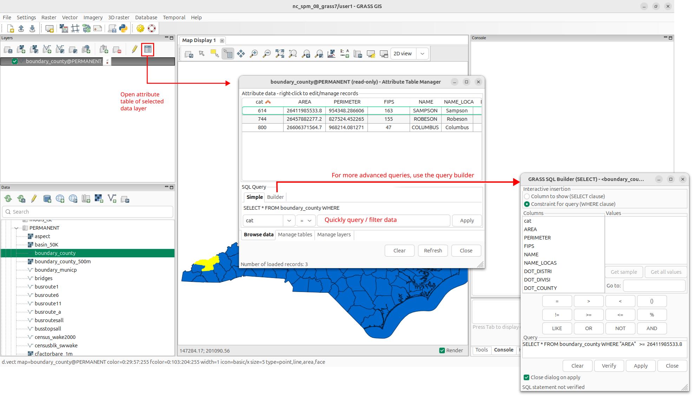
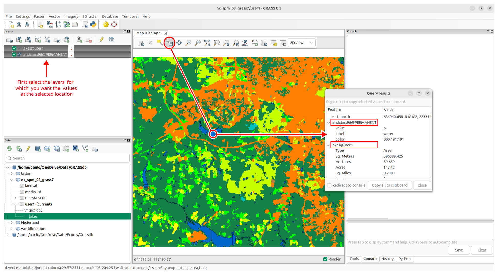

Appendix A. Working in GRASS GIS
GRASS (Geographic Resources Analysis Support System) offers a wide range of tools for terrain and ecosystem modeling, hydrology, management and analysis of geospatial data, and the processing of satellite and aerial imagery. It comes with a temporal framework for advanced time series processing and a Python API for rapid geospatial programming. Read more here…
For users not familiar with GRASS, start with this page, and next, check out the First time users page. For those who are well versed in GIS, but new to GRASS, have a look at these tips. And if you are more familiar with ArcGIS, check out the page GRASS for ArcGIS users to get a grasp of the main GRASS concepts you should know about. QGIS users should note that most grass functions used in this tutorial are also available in QGIS.
A.1 First time use
To run GRASS, click on the GRASS link on the desktop or from the system menu. Alternatively, open the command line window and type grass. When launching GRASS for the first time, you will open a default project called world_latlog_wgs84 where you can find a map layer called country_boundaries showing a world map in the WGS84 coordinate system.
{kind=link}
You can also download other sample datasets. For example, the North Carolina dataset is often used in examples. You can simply reach them through management icon in the panel. The sample data will be downloaded as a new project. in the current GRASS database.
The start up message offers you the option to create a new project (it still uses the older term Location for project here). Selecting this will start a which will guide you through a series of steps to browse and select the coordinate reference system (CRS) suitable for your study area or one that matches your data’s CRS. By default, it will do this in the current GRASS database, but you have the option to create a new one in the process. But before you start creating your own database, let’s see how GRASS handles and stores data.
A.2 The database
A.2.1 DB structure
Raster (incl. aerial imagery and satellite data) and vector data are stored in GRASS internal formats. Hence, all external data files (GeoTIFF, SHAPE, GeoPackage, …) need to be imported into the GRASS GIS database. This is a set of directories and files with certain structure (Figure A.2). Directories within a GRASS database are called projects1. All data in a project are in the same projection/coordinate reference system (CRS)2. Typically, a project contains all data related to one project or a geographic area. Alternatively, a project can simply contain all data in a given CRS.
{kind=link}
Every project includes a obligatory PERMANENT mapset, which typically contain commonly used data within one GRASS project such as base maps. It can furthermore contain other mapsets (subprojects) that can be used to group data sets together according to e.g., area, task, theme or user.
When you’re working within the PERMANENT mapset, you automatically have read access to all the other mapsets within that project This allows you to use data from any other mapset in the current location without needing to change settings or append the mapset name.
If you are working within any other mapset (besides PERMANENT), you do not have automatic access to the data in other mapsets. To use data from a different mapset, you have two options:
- Append the name of the mapset to the layer name using the format
layername@mapsetname. This lets GRASS know to look for the layer in a different mapset. - Use the g.mapsets command to add access to multiple mapsets. Alternatively, use the Data catalog to grant access.
Regardless of which mapset you are working in, you can only write (create or modify) layers in the current mapset. Even if you access data from other mapsets, you cannot modify or add data to those mapsets. This ensures that mapsets maintain some level of separation and data integrity, preventing accidental changes to data outside your working environment.
A.2.2 Mapset access
In GRASS GIS, the concept of access rights is closely tied to the structure of the mapsets within a Project Each location can have multiple mapsets, with a designated “PERMANENT” mapset that typically contains core data like region settings, projection information, and often serves as a repository for foundational layers (e.g., basemaps, DEMs). Here’s how access rights work across mapsets:
For GIS users not used to this setup, it may take a bit to get used to. But it has some clear advantages. Read this overview for more information about the GRASS database.
A.2.3 Attribute management
In GRASS, the geometry (spatial data) of vector layers is stored and managed separately from their associated attribute data. The geometry (spatial data) of vector features, such as points, lines, and polygons, is stored in a special format within the GRASS GIS database. This geometry data includes the coordinates that define the shape and location of each feature on the map. The attribute data (non-spatial data)3 stored it in a separate attribute database. GRASS supports various database management systems (DBMS), such as SQLite (default), PostgreSQL, MySQL etc.). All these database backends provide full SQL support4.
Each vector feature in the geometry data has a unique ID. This ID is used to link the feature to its corresponding row in the attribute table based on the matching ID (usually stored in the “cat” integer column). When performing analysis or creating maps, GRASS automatically combines the geometry with the relevant attribute information, allowing you to to work seamlessly with both the geometry and attribute data, even though they are stored separately.
The way the data is stored is not something the casual user should be concerned with, but good to know for more advanced uses. It gives more flexibility as users can update or modify attribute data without affecting the geometry, and vice versa. For an example of how this can be used, see Section 2.2.4.
A.2.4 Create a database
Creating a new database is rather straightforwards using the database . It guides the user through a number of simple dialogs. In the example below a new GRASS database called GRASSdb is created with a project called SDM with the coordinate reference system (CRS) WGS84 lat/lon (EPSG 4326). Note that if you want to create a new project in an existing GRASS database, use the instead, and go straight to step 3.
In the , click the icon to create a new database. Next, select the folder in which you want to create the database. Create a new sub-folder (the GRASS data directory) with the name of your GRASS GIS database and select it. After you have created the database, it will appear in the list of databases in the .
{kind=link}
{kind=link}
After selecting the folder for your database, you are asked if you want to create a new project. Select Yes
{kind=link}
Provide the name of the new project, for example SDM, optionally add a description, and hit Next.
{kind=link}
If you know the CRS of your data or study area, you can fill EPSG code or description. In this example, use keep the default choice to select the CRS from a list by EPSG in the next step.
{kind=link}
If you do not know CRS of you data, you can read it from your georeferenced data file (e.g. GeoPackage or GeoTiff file with the related metadata properly included). If you use this option, you are asked whether the data itself should be imported into the new project. The default region is then set to match imported map.
Type in 4326 in the search box of the ‘Select coordinate reference system (CRS) window’, hit Next and in the subsequent ‘Data transformation’ window keep the default and hit Next again.
{kind=link}
Review the information in the ‘Summary’ window, and if everything is OK, hiet Enter.
{kind=link}
The GRASS database and project should now be visible in the panel, and include a PERMANENT mapset. Note that you can also create a new database, project or mapset using Python code, as explained in Section A.9.
A.3 Data import
When processing spatial data in GRASS GIS, the first step is to import the datasets of interest into GRASS (they can also just be registered to avoid data duplication at the expense of sometimes lower data quality). To import your own data, use the raster data import  or vector data import tools. If the coordinate reference system (CRS) of your data does not match your project’s CRS, data will be automatically reprojected. Alternatively, you can import data using the command line. For the import of raster data, use r.import or r.in.gdal. The first offers on-the-fly reprojection5, while the latter offers more control about how your data is imported. Similarly, you can import vector data using v.import and v.in.ogr.
or vector data import tools. If the coordinate reference system (CRS) of your data does not match your project’s CRS, data will be automatically reprojected. Alternatively, you can import data using the command line. For the import of raster data, use r.import or r.in.gdal. The first offers on-the-fly reprojection5, while the latter offers more control about how your data is imported. Similarly, you can import vector data using v.import and v.in.ogr.
{kind=link}
{kind=link}
{kind=link}
GRASS can handle many different data types, and offers various tools to import e.g., temporal data sets and satellite images as well. This page provides a list of core import modules. And for more specialized data import tools, check out the list of addons (Section A.6).
A.4 Data management
The GUI interface allows you to find, explore, manage and display raster and vector data. More advanced exploration and visualization is also possible using, e.g., queries and adding legend. The screenshots below depicts some of the ways to display and explore data. You are encouraged to familiarize yourself with the different ways to interact with the data using the menu, context menu6 and command line. For a more detailed overview of the GRASS GUI, see here.
{kind=link}
{kind=link}
{kind=link}
{kind=link}
{kind=link}
 
{kind=link}
A.5 GRASS modules
GRASS GIS functionality is organized into modules, which are standalone programs with defined interface. They can be executed either through a graphical user interface (GUI) , command line interface (CLI) or using Python . The GUI offers a user-friendly approach to executing modules where the user can navigate to data layers that they would like to analyze and modify processing options with simple check boxes.
The CLI allows users to execute a module using command prompts specific to that module. This is handy when you are running similar analyses with minor modification or are familiar with the module commands for quick efficient processing. And you can easily combined both; this manual page describes in more detail how GUI and command line interface represent the same tool.
From the three options, Python arguably offers the most flexibility and power, as one can easily combine GRASS-specific functions and generic Python functions. In fact, many of the GRASS modules are written in Python. See Section A.9 for a short introduction of using Python in GRASS.
{kind=link}
{kind=link}
{kind=link}
Their graphical user interface (GUI) is a dialog with several tabs which organize module parameters into groups. They all follow the same structure. The figure below shows the GUI dialog for the r.neighbors module. Each parameter can have different type of input fields, for example text entry or drop-down list. Flags are represented as checkboxes. The parameter (or flag) name is visible on the right side of each input field so that it is simple to understand how the module dialog relates to the command representation which is used in the manuals and tutorials. The commands can be used to call the module in the command line, Shell scripts or, with a slight modification, in a Python script. For a more detailed description, see [here]{https://grass.osgeo.org/grass84/manuals/wxGUI.modules.html}
{kind=link}
GRASS contains over 500 programs and tools to import, manipulate, analyse and visualize data. To find the modules or function you need, it is good to know that all raster functions start with r.* Likewise, vector functions start with a v.*, temporal functions with a t.*, 3D raster functions with r3.*, image functions with a i.*, d.* and database functions with a db.*. For an overview of all core modules in GRASS, see this page.
To run a function from the command line or console, simply type in the name of the function, followed by the required arguments. For a quick overview of the function’s argument, type the function’s name followed by --help. Alteratively, you can type in the name of the function in the Console tab or in the terminal and hit enter (Figure A.16).
{kind=link}
Keeping record of the functions you use in your analysis is good practice. GRASS offers some convenient ways to track and repeat commands you have executed before. In the terminal, you can use the up or down arrow to go through the commands you have run on the command line during the session. For commands carried out using the menu or console, you can check the history browser pane. The history is stored in your database, so they are available across sessions, and can be easily shared along with your data.
{kind=link}
A.6 GRASS addons
There is a large list of GRASS addons available. These offer functions that are not (yet) part of the core software package. They can be easily installed using the wxGUI Extension Manager to install Addons or using the command line.
{kind=link}
You can also install addons from the command line using the g.extension function. For example, the code below installs the r.maxent.train addon.
Installed addons can be found in the Tools panel under Addons (see Figure A.14) and can be used in the same way as core functions.
A.7 Computational region
The region is one of the fundamental concepts of GRASS. Any computation and raster analysis adhere to the so-called computational region7. This is the currently active bounding box and a defined spatial resolution. This means that if a raster map has an original resolution that is different from the resolution of the current computational region, or when the current computational region’s cells are shifted in space compared to the original raster map, the values are resampled on-the-fly by GRASS GIS, using the nearest neighbor method8, to meet the cell resolution and extent of the current computational region setting.
Importantly, the geographic region is defined per mapset. It is therefore the current region in the mapset you are working in that defines the geographic area and resolution in which raster analyses will be done. See this GRASS wiki page for a more detailed explanation of this concept.
{kind=link}
By changing the computational region, the user can run raster analyses on a subset of a larger extent data for quicker testing or analysis of specific regions, without having to create a new dataset first (avoid clipping). The video below demonstrates this by repeating the same raster calculation using two different region settings.
Note that by default, the region settings do not affect how raster layers are imported. GRASS GIS import tools by default always import the entire map data, maintaining the map’s original resolution and alignment.
The region’s settings are important if the r.in.gdal module is used with the -r flag. This flag tells GRASS to limit the import of the raster data to the area defined by the computational region. If the region and the raster layer are not perfectly aligned, the area that is imported will be slightly larger than the computational region. How much larger depends on the resolution of the computational region, as illustrated in Figure A.20.
{kind=link}
Importantly, the region’s settings only affect the precise area that will be imported when using the -r flag. The resolution and alignment of the imported raster layer will be the same as that of the original input raster file.
A.8 Using a MASK
In GRASS GIS, a MASK is a raster map that defines areas of interest for raster operations by masking out unwanted areas. It allows users to focus their analysis on specific regions while ignoring others. If a raster map named “MASK” exists, most GRASS raster modules will operate only on data falling inside the masked area, and treat any data falling outside of the mask as if its value were NULL. This feature is especially useful when working with large datasets or when analyzing a particular region of interest.
A MASK is typically created from an existing raster map by setting certain cell values as null (masked) and others as valid (unmasked). Commands such as r.mask or r.mapcalc can be used to create a MASK based on specific criteria or thresholds. Read the manual page for more details concerning creating MASK layers using different methods.
Once a MASK is set, it is automatically applied to all raster operations, so only the unmasked (valid) areas are considered. I.e., operations like raster algebra, statistics, or interpolation only occur where the MASK allows it. MASKs are not permanent. Once a MASK is created, it remains active until explicitly removed using the r.mask -r command. This temporary behavior allows users to switch between different MASKs for various operations without permanently altering their data.
A.9 Working in Python
All GRASS modules can be used in Python scripts, using the GRASS Python scripting library or the Python API, as described here. Examples in this tutorial will use the Python interface provided by the grass.script package. To use the this package, you first need to import the grass.script library. In the code below, it is imported as gs (this only needs to be done once at the beginning of a session or script). Next, you can run GRASS functions, using for example the run_command, read_command, write_command or parse_command. Read more about when to use what functions in the manual.
For simply executing a function, you use run_command. The first parameter for functions from this group is the name of the GRASS module as string. Other parameters are options of the module. Flags can be passed in a parameter flags where value of the parameter is a string containing all the flags we want to set. The general syntax is the following:
The function parameters are the same as module options, so you can just use the manual page of the module to learn about the interface. Compare, for example, the command line code () and Python code () to import the raster landuse.tif as landuse raster layer in GRASS using the r.in.gdal module. As you can see, the Python function let’s you ‘wrap’ the command line code in a Python command.
One of the advantages of using Python is that you can combine GRASS specific functions and generic Python code. The following example illustrates this. In Section A.2 you saw how to create a new database. The code below does the same. First, a new folder GRASSdb is created using regular Python code9. Next, we create a new project in that folder. This will automatically promote that folder to a GRASS database (After all, a GRASS database is nothing else than a folder with one or more GRASS projects). The last step is to change to that new project/mapset. This will ensure that all subsequent analysis are carried out in that new mapset.
# Import the grass.script and os libraries
import os
import grass.script as gs
# Create a new folder (this will be the location of the GRASS GIS database)
os.mkdir("/media/paulo/HD2/")
# Create a new project
gs.create_project(path="/media/paulo/HD2/GRASSdb", name="SDM", epsg="4326")
# Change to the newly created project / mapset
gs.run_command("g.mapset", mapset="PERMANENT", project="SDM")Footnotes
In GRASS versions prior to 8.4 these were called locations.↩︎
For quality reasons, GRASS GIS handles one CRS per location. Read more about the reasons in this Wiki page. To learn more about coordinate references systems, go here. For information about different ways to store and share CRS information, see here.↩︎
The attribute data (non-spatial data) refers to descriptive information associated with each vector feature. For example, if you have a vector layer representing lakes, the attribute data might include information like the lake’s name, area, and depth.↩︎
See this manual page for more information.↩︎
A context menu (also know as a contextual menu, shortcut menu or pop-up menu) is the menu that appears when you right-click on an item in the menu. It offers a set of choices that are available for, or in context of, whatever it was you clicked.↩︎
Note that this concept does not apply to vector maps. Vector maps are always processed entirely.↩︎
GRASS will use the nearest neighbor method to resample the raster layer. This might not always be the best method. If not, you need to resample the data yourself, using the most suitable method. See for options. See this wiki page for more insights.↩︎
Note, on Windows, paths are written using backslashes (\) as the separator between folder names. On Unix based operating system such as macOS, Linux, and BSDs, the forward slash (/) is used as the path separator.↩︎